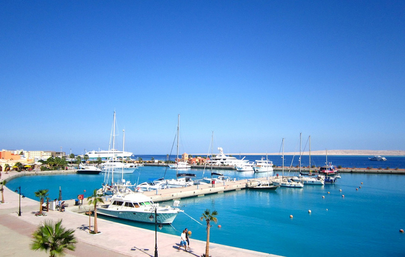
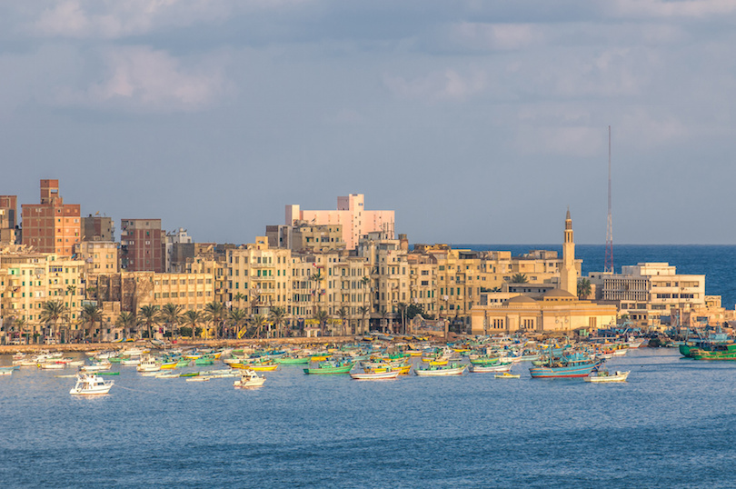
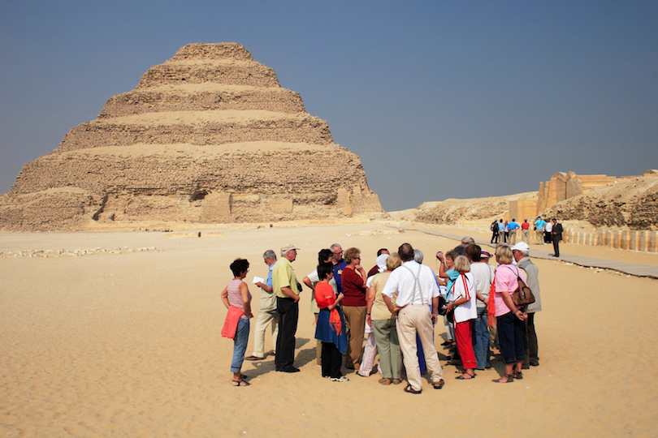
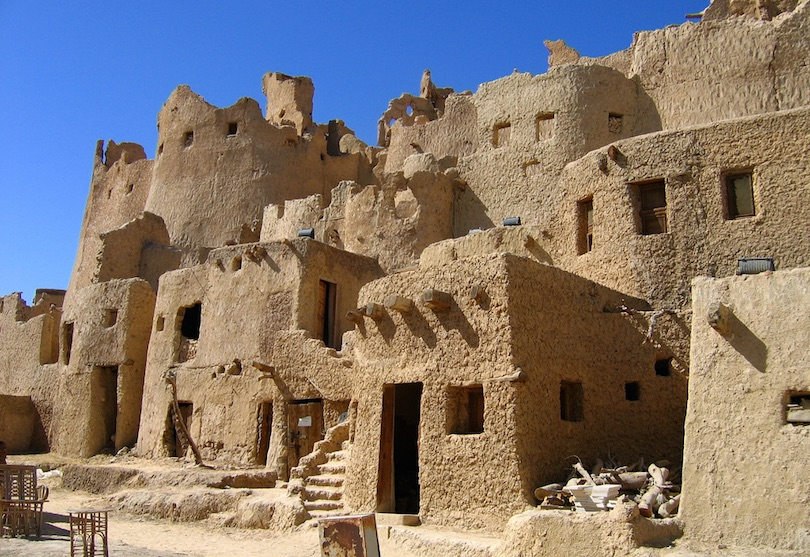
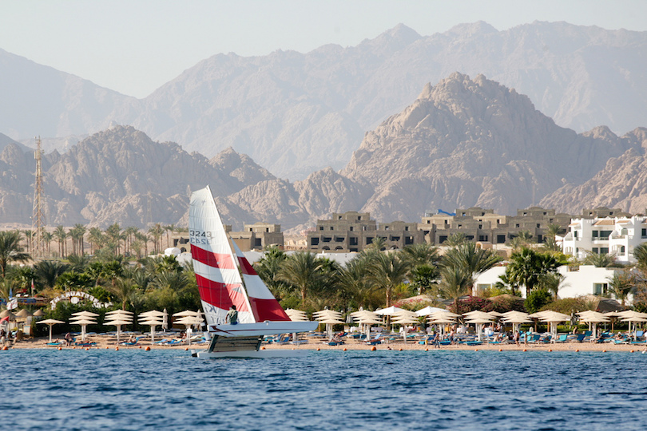
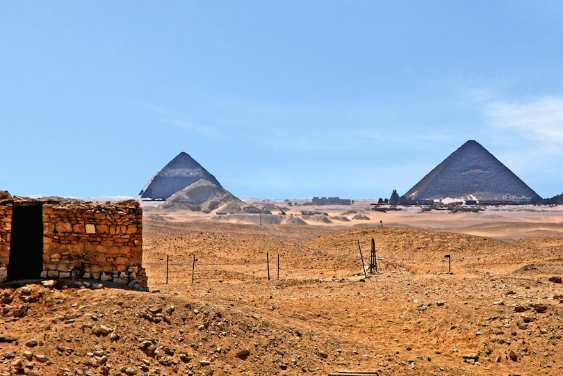
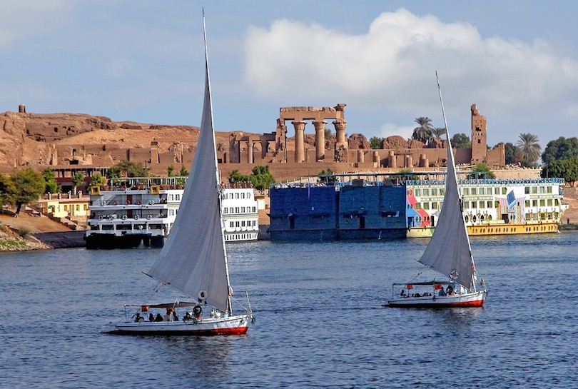
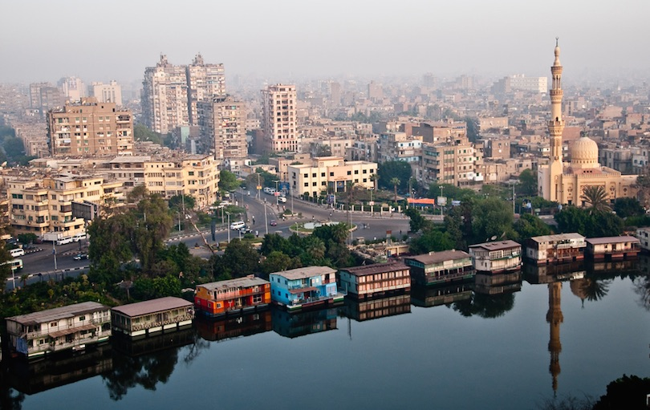
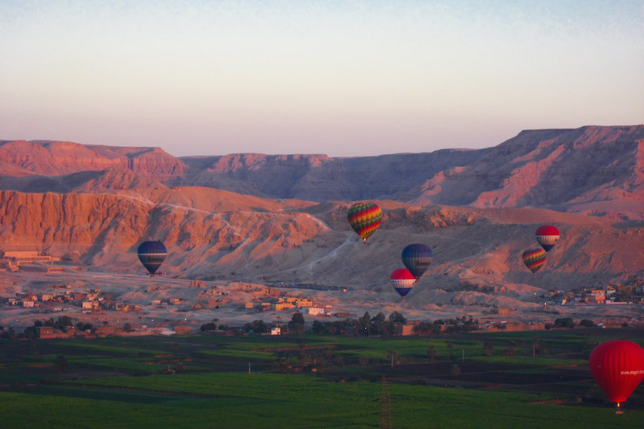
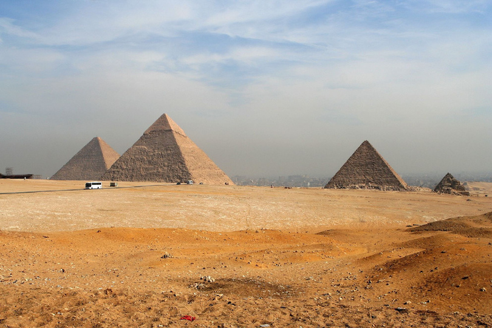

Hurghada is a resort town on the edge of the Red Sea, easily reached via a bumpy six-hour bus ride from Cairo. It offers a more popular alternative to Sharm El Sheikh and Dahab and is now one of Egypt’s most-visited tourist destinations. But that’s understandable, as there’s plenty to love about Hurghada with its many beaches and warm waters.
Once a simple fishing village, this famous resort town has hundreds of high-end hotels along the seafront, yet the focus is still mainly on relaxation. This section of the Red Sea is renowned for its excellent scuba diving opportunities, with gorgeous colorful coral reefs to discover just offshore. Other watersports, like snorkeling, windsurfing, and jet-skiing, are just as popular.
For those who prefer to admire the magical marine life from above the water, there are many places offering glass-bottom boat trips, so you can usually shop around to find the best offer.
Hurghada is extremely popular with Eastern Europeans and especially Russians, hundreds of thousands of whom visit each year. Many tourists choose to combine their holiday here with visits to other prominent locations along the Nile Valley, including the relatively nearby city of Luxor.
2. Alexandria

The second-largest city and leading seaport in Egypt, Alexandria has a prime location on the edge of the Mediterranean. Founded in 331 BC by Alexander the Great, the city was once considered the crossroads of the world. Several of Egypt’s pharaohs, including Cleopatra, ruled the country from Alexandria until the nation fell to Rome in 30 BC Under Roman rule, the city earned a reputation as a center for arts and literature. The city’s Roman Theater, which features stunning mosaic flooring and marble seating, is a remnant of Alexandria’s Roman occupation.
Today’s Alexandria is a dusty seaside city with an over-inflated population of 5 million, that is badly in need of a lick of paint. It’s a faded shade of its former glorious cosmopolitan self, but still worth a visit for its many cultural attractions and glimpses of its past. Many of Alexandria’s most famous historic sites, including a library that housed more than 500,000 books, were destroyed by devastating earthquakes in the 14th century. Completed in 2002, a new library stands near the site of the original Library of Alexandria.
Exhibits of Alexandria’s long history are on display at the Alexandria National Museum. The museum’s more than 1,800 artifacts are arranged chronologically, from the Greco-Roman period to the Coptic and Islamic eras.
In ancient Alexandria, the most prominent feature was the Lighthouse of Alexandria, a towering structure that was considered one the Seven Wonders of the Ancient World. The lighthouse crumbled into sea during an earthquake along with much of the ancient metropolis. Scuba divers can still view massive stones and statues lying on the seabed floor.
3. Saqqara

The name Saqqara refers to an Egyptian village, but more importantly, an age-old necropolis with a scattering of both large and smaller satellite pyramids spread across a dusty desert plateau. Buried beneath the sand overlooking the Nile Valley until the 19th-century, Saqqara has since been undergoing a significant restoration process.
Named after Sokar, the Memphite god of the dead, Saqqara served as a cemetery for the ancient city of Memphis for thousands of years and is the largest archeological site in Egypt. As such, it’s home to hundreds of fascinating tombs and burial sites for pharaohs and other Egyptian royals.
The highlight of Saqqara is the Step Pyramid of Djoser – the oldest pyramid on Earth. You’ll find some of the best views of the Nile from the top of this pyramid, accessible via a wooden ramp when the gate is open. Try one of the many doors and explore any that are unlocked – you never know what kind of mysteries lie behind them. The Pyramid of Teti with its fascinating Pyramid Texts and the Mastaba of Ti with its incredible reliefs are two more must-sees.
4. Siwa Oasis

Located near Egypt’s western border, Siwa Oasis remained culturally isolated from the rest of the country until late in the 19th century. Surrounded by the Egyptian Sand Sea, the Siwan people developed their own unique customs as well as their own language, Siwi, a Berber dialect. The small community was not unknown to the outside world, however, even centuries ago. The famous Temple of the Oracle of Amun, believed to have been built in the 6th or 7th century B.C., made the oasis a place of pilgrimage. The most famous visitor to seek the oracle’s wisdom was Alexander the Great.
Today, Siwa Oasis is an increasingly popular travel destination. Vacationers come to the city to enjoy the town’s many freshwater springs, to stroll through acres of palm groves and to explore ancient mud-built fortresses and remnants of Siwa’s Greco-Roman past. Bubbling springs are in abundance here. One of the most popular is a stone pool known as Cleopatra’s Bath. A more secluded pool is located on an island in Lake Siwa. Visitors reach Fatnas Spring by navigating a narrow causeway.
Cafés in the small town of around 23,000 people are designed for relaxation as well. Local and visitors alike enjoy sipping tea and smoking from a communal hookah. A trip to the local marketplace gives visitors the opportunity to explore the city’s unique culture and to sample dates and olives grown in the region.
5. Sharm el-Sheikh

Sharm el Sheikh is one of the most popular resort towns in Egypt, located at the tip of the Sinai Peninsula. With its warm, deep blue water and great golden beaches, Sharm (as it’s affectionately called) is a popular package holiday destination with its own airport.
But this old fishing village has so much more to offer than simply sunbathing. Nicknamed the City of Peace after the countless international peace talks that have been hosted here, Sharm el Sheikh is one of the best scuba diving spots in the world. Don’t miss the chance to snorkel or dive the extraordinary reefs around Tiran Island and Ras Mohammed National Park, home to some astonishingly colorful marine life.
Despite being the perfect spot for a fly and flop holiday, those looking for adventure will find it here too. Sharm el Sheikh’s at the southern tip of the peninsula gives easy access into the desert, where you can visit Bedouin camps and climb Mount Sinai, an ancient biblical spot known for its spectacular view of the sunrise.
6. Dahshur

Dahshur is a little village south of Cairo that’s home to some lesser-known, less-crowded pyramids – you won’t find the massive queues that you’d expect at the Giza complex or Saqqara here. In fact, until 1996, it was a restricted military zone.
Like Saqqara, Dahshur was part of the ancient necropolis of Memphis. The same pharaoh behind the building of the Great Pyramid built two more complete pyramids in Dahshur. In the years after, many more pharaohs had their own pyramids built here to form a total of 11, but none of them could compete with the original ones.
Highlights include the unusually-shaped Bent Pyramid and the Red Pyramid, both constructed during the reign of Pharaoh Sneferu (2613-2589 BC). The Red Pyramid (also known as the North Pyramid), is famously the oldest true pyramid in Egypt because it doesn’t have any steps or bends. The Black Pyramid of Amenemhat III is another sight that can be enjoyed from the base of the Bent Pyramid. It cannot be visited, and it isn’t actually a pyramid at all; rather, a strange-looking mound of dark rock.
7. Aswan

Egypt’s southernmost city, Aswan is another major city nestled along the banks of the Nile River. However, due to its location and size, it offers a much more relaxed alternative to big cities Luxor or Cairo.
Although its own monuments are minor compared to Luxor’s, Aswan is the base for excursions to the temples of Philae and Kabasha and to the Sun Temple of Ramses II at Abu Simbel, to the south. It is also the best starting point for excursions to the temples of Kom Ombo and Edfu, between Aswan and Luxor.
Aswan itself has one of the most beguiling settings in Egypt. Granite cliffs overlook the Nile’s First Cataract, the first of a series of shallow white water rapids broken by rocky islets that stretch north to Khartoum. Home to a large community of Nubian people, it was once the gateway to Africa in ancient Egypt. You can learn more about these people at the Nubian Museum, which is filled with treasures and relics that were kept safe from the flood of Nubia.
Aswan is famous for its granite quarries that were used to build Luxor’s many obelisks. Some of these unfinished obelisks can still be seen in the city today, such as the largest known ancient obelisk in the world located in the south of Aswan that was intended to be over 40 meters tall.
The Aswan region attracted world-wide attention in the 1960s when the construction of the Aswan High Dam was completed. Two ancient stone temples built by Ramesses II at Abu Simbel lay in the path of the rising waters of Lake Nasser. The edifices and their temples were dismantled and reassembled on a bank high above the reservoir. About a 3 hours bus drive from Aswan, a day trip to view the massive temples is a can’t-miss activity.
8. Cairo

This dusty capital city is one of the most sprawling cities on Earth, home to more than 17 million people. Built on the banks of the Nile River, Cairo is a medieval Islamic city with an eternally hazy horizon and beige-colored buildings topped with TV satellites.
Built near the ancient capital city of Memphis, modern Cairo is a popular starting point for cruises up the Nile and for explorations of the Pyramids at Giza just outside the city’s limits. But there is so much to do within this enormous city itself. At the world-renowned Egyptian Museum of Tahrir Square, visitors can get a close-up view of the treasure of Tutankhamun as well as mummies and other artifacts from Egypt’s ancient past.
The city’s most historic mosques are worth a visit as well. Dating back to the 9th century when the Fatimids made the city their capital, the Ibn Tulun Mosque is the oldest in Cairo. The stunning Citadel and Mosque of Mohammed Ali Pasha, also known as the Alabaster Mosque for its gleaming white edifice, was named after the man who is regarded as the founder of modern Egypt.
When you’ve tired of Cairo’s historical sights, get a true taste of Egypt by immersing yourself in everyday life. Embrace the crowds while shopping at one of the city’s chaotic markets like the Khan al-Khalili bazaar, smoke some shisha amongst locals at a local Ahwaz or escape the heat of the inner city entirely with a breezy felucca trip along the Nile on a traditional Egyptian sailing boat.
9. Luxor

One thousand years after the construction of the Great Pyramids, the New Kingdom arose in Egypt, and power shifted from the ancient capital of Memphis to Thebes in the south, the site of modern-day Luxor. Enriched by gold mined in the deserts of Nubia and transported to the city on the river Nile, Thebes became the country’s cultural and political hub. Today, the mid-sized city Luxor is known as the “world’s largest open air museum” and is one of Egypt’s most popular travel destinations. There’s so much to see and do in Luxor – from temples to tombs and everything in between. You’ll need to allow a couple of days to do it all justice.
Most of the Luxor attractions are located either on the East Bank or the West Bank of the Nile. Famous highlights on the East Bank include Karnak Temple – also known as Ipet-isu (‘Most Select of Places’) – an extraordinary temple city that took over 2,000 years to build. Although the entire Karnak complex consists of four main parts, the main structure known as the Temple of Amun is the only one that is open to the general public. The largest religious building ever built, the temple’s pillared hall is a breathtaking stone forest of 134 columns that stand as high as 21 meters (69 feet). Stroll.
The beautifully illuminated Luxor Temple is a particularly stunning temple to explore at night. On the other side of the Nile, the West Bank boasts the white-washed scenery of the Valley of the Kings, home to many elaborate and colorfully-muraled tombs, pits, and burial chambers. Some of the tombs are included in your ticket entrance, but prepare to pay more to visit King Tut’s tomb – the highlight – the final resting place of King Tutankhamun’s mummy.
10. Giza Necropolis

The Giza Plateau is probably one of the most recognizable destinations on Earth. Located on a desert plateau to the west of the capital of Cairo, Giza is its own city but in recent years it’s grown so much that it feels like another district of ever-expanding Cairo.
While once a humble carriage track, Giza is now one of the most touristy parts of Egypt, home to upmarket hotels, big-name restaurants, giant shopping malls, and pulsing nightclubs. But most famously, Giza is the closest part of the city to the Pyramids of Giza and the Sphinx, which is why most people center themselves around this neighborhood for at least a few days during their trip to Cairo.
The three main pyramids of Giza are an ancient necropolis that were built as tombs for three Egyptian pharaohs – Khufu, Khafre and Menkaure. A scattering of satellite pyramids in the area were built as a place to bury their wives and royal family members. The Great Pyramid of Khufu (Cheops) is the one you can enter if you’re happy to pay extra. Alternatively, you can take a camel ride out into the desert and get a photo with all of the pyramids in the background before heading to the Sphinx for the stock standard Sphinx-kissing tourist photo.
If you happen to be staying close to Giza overnight, don’t miss the Pyramids Sound and Light Show. It’s exactly what it sounds like, but it’s a great way to appreciate the Great Pyramid a little differently. While you’ll have to pay for a seat at the official light show, if you have dinner on the balcony of the nearby Pizza Hut, you can watch both the sunset and the show for free.